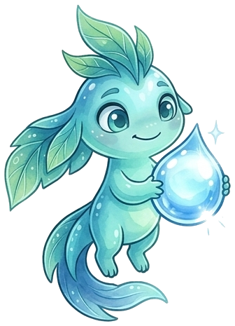

Gratis · a tu ritmo · desde el celular
Cursos de Xlatierra
Cada módulo dura unas 2 horas, tiene preguntas para adivinar, actividades, fuentes en cada lección y un certificado al aprobar. Puedes empezar por el que quieras.
Módulo 1
Introducción al cambio climático

~2 h16 lecciones6 actividadesCertificado
Qué está pasando con el clima, por qué, a quién le afecta más y qué puedes hacer.
- Actividad: «La cobija del planeta»
- ¿De dónde salen las emisiones de México?
- Juego «¿Mito o dato?» contra la desinformación
- Tu tarjeta de compromiso para compartir
Entrar al Módulo 1 →
Módulo 2
Conocer para proteger: biodiversidad de América Latina

~2 h14 lecciones3 actividadesCertificado
Por qué nuestra región es una de las que tiene más vida en el planeta, qué la amenaza y cómo protegerla.
- Países megadiversos y el caso del ajolote
- Actividades: «¿Quién vive aquí?» y «La red de la vida»
- Las fichas de especies de Axo
- Pueblos indígenas, 30×30 y ciencia ciudadana
Entrar al Módulo 2 →
Módulo 3
Liderazgo y acción climática juvenil

~2 h15 lecciones9 actividadesCertificado
Pasa de la preocupación a la acción: tus derechos, cómo armar un proyecto, hablar con quien decide y cuidarte en el camino.
- Tus derechos: Escazú, París y la ley mexicana
- Árbol de problemas y tu plan en una hoja
- Cómo hablar con autoridades y pedir información pública
- Jóvenes de América Latina que ya lo lograron
Entrar al Módulo 3 →
Módulo 4 · nuevo
Cuidar cada gota: el agua en América Latina

~2 h13 lecciones13 actividadesCertificado
De dónde sale el agua que usas, por qué escasea y a quién le falta, qué dice la ley y qué soluciones ya funcionan.
- Acuíferos, sequías y los glaciares que se van
- Agua segura, desigualdad y tu derecho al agua
- Cosecha de lluvia, ciudades esponja y reúso
- Qué puedes hacer en tu casa, escuela y colonia
Entrar al Módulo 4 →